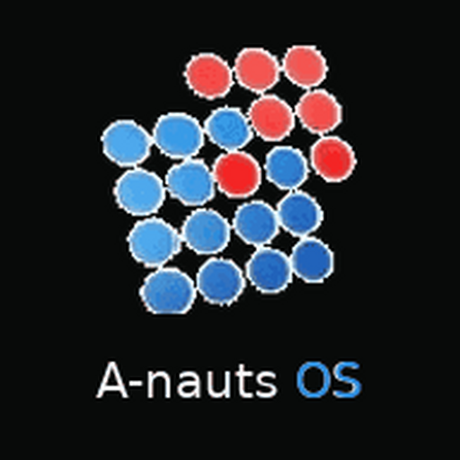

A-nauts OS
このページからホーム画面に追加すると、A-nauts OSのアイコンから管理画面を開けます。
iPhone / iPad
- Safariの共有ボタンをタップ
- 「ホーム画面に追加」を選択
- 右上の「追加」をタップ
Android
A-nauts OSを開く
ホーム画面から起動した場合は、自動的に管理画面へ移動します。
- Chromeのメニューを開く
- 「ホーム画面に追加」または「アプリをインストール」を選択